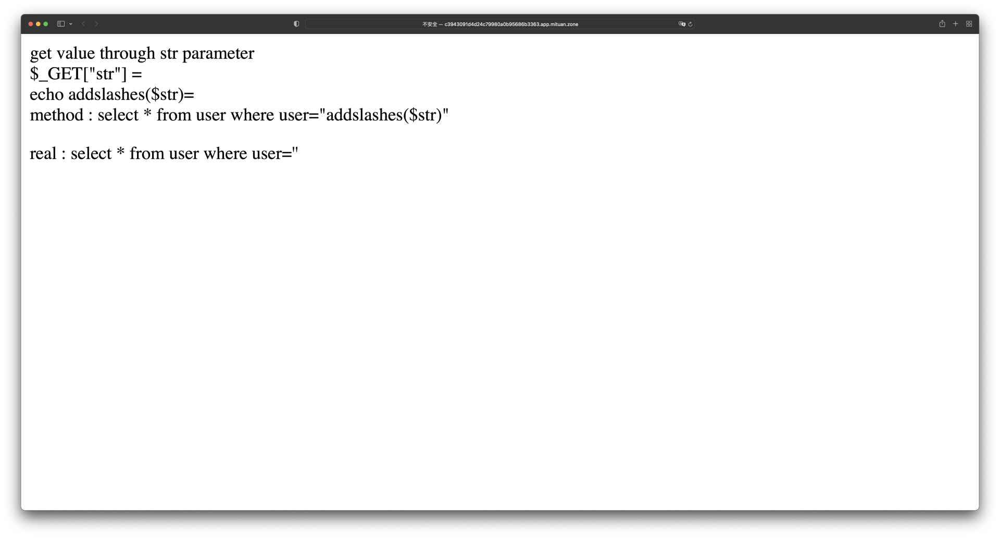

- 00 导读 解读OWASP Top10 2021.md.html
- 00 开篇词 从黑客的视角找漏洞，从安全的角度优雅coding.md.html
- 01 失效的访问控制：攻击者如何获取其他用户信息？.md.html
- 02 路径穿越：你的Web应用系统成了攻击者的资源管理器？.md.html
- 03 敏感数据泄露：攻击者如何获取用户账户？.md.html
- 04 权限不合理：攻击者进来就是root权限？.md.html
- 05 CSRF：为什么用户的操作他自己不承认？.md.html
- 06 加密失败：使用了加密算法也会被破解吗？.md.html
- 07 弱编码：程序之间的沟通语言安全吗？.md.html
- 08 数字证书：攻击者可以伪造证书吗？.md.html
- 09 密码算法问题：数学知识如何提高代码可靠性？.md.html
- 10 弱随机数生成器：攻击者如何预测随机数？.md.html
- 11 忘记加“盐”：加密结果强度不够吗？.md.html
- 12 注入（上）：SQL注入起手式.md.html
- 13 注入（下）：SQL注入技战法及相关安全实践.md.html
- 14 自动化注入神器（一）：sqlmap的设计思路解析.md.html
- 15 自动化注入神器（二）：sqlmap的设计架构解析.md.html
- 16 自动化注入神器（三）：sqlmap的核心实现拆解.md.html
- 17 自动化注入神器（四）：sqlmap的核心功能解析.md.html
- 19 失效的输入检测（上）：攻击者有哪些绕过方案？.md.html
- 20 失效的输入检测（下）：攻击者有哪些绕过方案？.md.html
- 21 XSS（上）：前端攻防的主战场.md.html
- 22 XSS（中）：跨站脚本攻击的危害性.md.html
- 23 XSS（下）：检测与防御方案解析.md.html
- 24 资源注入：攻击方式为什么会升级？.md.html
- 25 业务逻辑漏洞：好的开始是成功的一半.md.html
- 26 包含敏感信息的报错：将安全开发标准应用到项目中.md.html
- 27 用户账户安全：账户安全体系设计方案与实践.md.html
- 28 安全配置错误：安全问题不只是代码安全.md.html
- 29 Session与Cookie：账户体系的安全设计原理.md.html
- 30 HTTP Header安全标志：协议级别的安全支持.md.html
- 31 易受攻击和过时的组件：DevSecOps与依赖项安全检查.md.html
- 32 软件和数据完整性故障：SolarWinds事件的幕后⿊⼿.md.html
- 33 SSRF：穿越边界防护的利刃.md.html
- 34 Crawler VS Fuzzing：DAST与机器学习.md.html
- 35 自动化攻防：低代码驱动的渗透工具积累.md.html
- 36 智能攻防：构建个性化攻防平台.md.html
- 大咖助场 数字证书，困境与未来.md.html
- 春节策划（一） 视频课内容精选：Web渗透测试工具教学.md.html
- 春节策划（三） 一套测试题，看看对课程内容的掌握情况.md.html
- 春节策划（二） 给你推荐4本Web安全图书.md.html
- 结束语 无畏前行.md.html
- 捐赠
07 弱编码：程序之间的沟通语言安全吗？
你好，我是王昊天。
进入了加密失败这个大篇章，我们的第一个话题就是——弱编码。
如果你想了解什么是编码，那么不妨想象一下双十一购物的场景吧。
我们通过电商平台购买了许多零食、家居用品以及二次元手办，一时下单一时爽，一直下单一直爽，于是全国人民都在买买买。这个时候电商平台的难题来了，各式各样的商品要如何送到每个人手里呢？总不能每一种商品打造一条运输线路。
于是快递出现了，通过对不同类型的商品进行方形硬纸盒的封装，既保护了商品在运输中的完整性，又保证了传输的便捷性。
这就是编码的典型场景，在服务端与客户端传输数据的过程中，我们无法确认传输的内容中是否包含传输协议不支持的内容，因此在数据传输之前我们希望通过编码的方式将传输数据进行规范化。
这里一定要注意，编码是不具备保密性的。就像快递小哥只是不想知道包装里面是什么东西，如果他想知道的话，应该是一件不难的事情。
编码
我们来看看维基百科是如何定义编码的：
编码是信息从一种形式或格式转换为另一种形式的过程；解码则是编码的逆过程。
作为一名优雅的开发工程师，或者是一名“大黑客”，掌握多种编码特征都是非常重要的，这一讲，我就来带你进入编码的世界遨游一番。
字符编码
字符编码是把字符集中的字符映射为指定集合中的某一个对象，以便文本在计算机中存储或者在网络之间传递。在计算机发展的早期，ASCII这样的字符集是字符编码的标准形式，但是这些字符集有着很大的局限性，比如只适用于英文场景等，于是人们开发了许多方法来扩展它们，编码的类型也逐步丰富：
- 早期标准：ASCII、EBCDIC
- 西欧标准：ISO-8859-1、ISO-8859-5、ISO-8859-6、ISO-8859-7、ISO-8859-11、ISO-8859-15等
- DOS字符集：CP437、CP737、CP850等
- Windows字符集：Windows-1250、Windows-1251、Windows-1252等
- 中文：GB2312、GBK等
- Unicode：Unicode、UTF-7、UTF-8、UTF-16、UTF-32等
这些字符集有各自的诞生意义和应用场景，在我们日常工作中会经常遇到其中的某一些，这里我们选取几个有代表性的字符集来深入研究。
ASCII- ASCII（American Standard Code for Information Interchange，美国信息交换标准代码）是最常用的编码，来表示字母、数字以及常用符号。如果你正在使用Mac或者Linux类型系统，可以直接使用如下命令来查看所有的ASCII字符：
> man ascii
ASCII(7) BSD Miscellaneous Information Manual ASCII(7)
NAME
ascii -- octal, hexadecimal and decimal ASCII character sets
DESCRIPTION
The octal set:
000 nul 001 soh 002 stx 003 etx 004 eot 005 enq 006 ack 007 bel
010 bs 011 ht 012 nl 013 vt 014 np 015 cr 016 so 017 si
020 dle 021 dc1 022 dc2 023 dc3 024 dc4 025 nak 026 syn 027 etb
030 can 031 em 032 sub 033 esc 034 fs 035 gs 036 rs 037 us
040 sp 041 ! 042 " 043 # 044 $ 045 % 046 & 047 '
050 ( 051 ) 052 * 053 + 054 , 055 - 056 . 057 /
060 0 061 1 062 2 063 3 064 4 065 5 066 6 067 7
...
ASCII的一个字符占8位（bit），第一位总是0，这种情况下能够支持2的7次方也就是128个字符，其中00100000~01111110之间都是可打印字符。
GB 2312 & GBK- 对于中文来说，汉字博大精深，区区128个字符肯定是不能够满足我们的需求的，于是就诞生了中文编码。考虑到8位编码是远远不够的，并且需要与ASCII编码兼容，GB2312编码方法应运而生，它具有以下特征：
- 使用两个8位来进行编码；
- 0～127编号的字符使用ASCII标准编码；
- 两个大于127的字符连在一起时表示一个汉字，前一个称为高字节，后一个称为低字节。
我们通常所说的全角字符就是双字节字符，而单字节字符就是半角字符。但后来发现GB2312的编码仍然不具备表示所有汉字的能力，于是我们就对上述第3个条件进行了优化，诞生了GBK编码，这里K表示“扩展”。优化后第三点特征表示为：
- 允许低字节使用0~127的字符，仅凭借高字节判断是否为中文。
GB2312编码示例：
你好hello123
\xC4\xE3\xBA\xC3\x68\x65\x6C\x6C\x6F\x31\x32\x33
常见的GBK编码：
你好hello123
\xC4\xE3\xBA\xC3\x68\x65\x6C\x6C\x6F\x31\x32\x33
Unicode & UTF-8- 对于全球各国的文字来说，ASCII的字符集已经不能满足使用了，对于这个问题ISO提出了一个囊括全球所有文字的终极解决方案：Unicode。它最初规定所有的字符都是用两个字节来表示，这个版本就是UTF-16；但是后面发现仍然不够使用，于是扩展到四个字节，这个版本就是UTF-32。目前最新的Unicode已经支持了emoji表情，让我们的文字语言更加丰富且生动。
但是所有的字符都使用Unicode来存储是否会增大存储成本呢？毕竟ASCII单字符只占用1个字节，GBK也仅仅只占用2个字节，如果全部使用UTF-32来表示，就意味着至少2倍存储空间的膨胀，这时另一个新的编码算法的出现解决了这个问题，并成为了在coding过程中广泛使用的编码类型——UTF-8。
UTF-8是一种变长编码，比如对于ASCII码它就用1个字节表示，面对其他类型的编码就在前面加一个高位字节。通过这种方式，它在普遍英文coding但是携带中文注释的环境中就显得非常适合了。
Unicode编码示例：
你好hello123
\x00004F60\x0000597D\x00000068\x00000065\x0000006C\x0000006C\x0000006F\x00000031\x00000032\x00000033
TF-8编码示例：
你好hello123
\xE4BDA0\xE5A5BD\x68\x65\x6C\x6C\x6F\x31\x32\x33
程序编码
URL 编码-
URL编码又称百分号编码，因为它的编码特征是以%开头，是不是很形象？它主要用于统一资源定位符（URL）的编码，也适用于统一资源标识符（URI）的编码。URI所允许的字符主要分为保留字符和未保留字符两类：保留字符主要是那些具有特殊含义的字符，如! * &等；未保留字符，主要指不具备特殊含义的字符，如A B C等。
如果一个保留字符在上下文中是有意义的，并且需要在URI中按照内容格式进行展示，那么该字符就要使用百分号编码。百分号编码首先会把字符的ASCII值表示为两个16进制的数字，然后在其前面放置转义字符%；对于非ASCII字符则先转换为UTF-8字节序，然后再放置转义字符%。
UTF-8格式百分号编码示例：
你好hello123
%E4%BD%A0%E5%A5%BDhello123
Base64 编码- Base64是一种用64个字符来表示二进制数据的方法。由于 64 = 2 ^ 6，因此每6位可映射到一个可打印字符，又由于每6位等于四分之三字节，因此可以简单理解为每四分之三字节映射到一个新的字节，这样也就很容易能计算出base64的编码膨胀率。Base64通常用于表示、传输以及存储二进制数据。
简单思考一下Base64的规则，会发现一个有趣的事情：如果要编码的字节数不能被3整除，那么就会无法进行Base64编码。所以完整的Base64编码规则是先使用“0”将不足的字节数在末尾补足，使其能够被3整除，然后再进行Base64的编码。增加的字节数在末尾用等同数量的“=”进行标记。
base64编码示例：
你好hello123
5L2g5aW9aGVsbG8xMjM=
编码 v.s. 加密
通过对编码的一些讨论，我们已经了解到编码的一些特性，这里我们将编码与我们上节课学过的加密做一下简单的对比，看看它们有什么相同和不同。
编码与加密都是可逆运算- 通过对编码数据进行解码即可恢复原始数据；对加密数据解密我们同样可以获得原始数据。
编码只需要1个输入，而加密需要2个输入- 选定编码函数之后，我们只需要选择待编码数据即可；而对于加密函数，除了待加密数据以外，我们还需要选择加密密钥。
编码的目的是方便数据交互，加密的目的是保护数据交互- 通过编码可以将数据在不同协议系统之间进行流转，目的在于可用性；通过加密可以将数据安全地传输，目的在于机密性。
编码 v.s. 转义
通常，转义是很容易与编码混淆的概念。因为与加密相比，转义同时具备只需要一个输入，可逆运算两个条件。但是转义与编码的使用场景是不同的，即它们的“目的”不同。
与编码便于数据交互的目的不同，转义通常有两个目的：
- 编码一个语句上的实体，比如设备命令或者无法被打印字符直接表示的特殊数据；
- 作为特殊字符引用，主要用于表示无法在当前上下文中以可打印形态录入的字符，比如回车符。
转义字符开头的字符序列被叫做转义序列，通常一个转义字符并没有它自己的意思，因此转义序列一般具有2个或更多字符。
通过判断二者的目的，我们可以很容易对编码和转义进行区分。
案例实战
了解了编码的基础知识，接下来我们一起来研究几个与编码相关的安全问题。这几个实战案例都已经搭建在MiTuan，搜索【编码漏洞合集】就可以直接使用。
宽字节注入
启动靶机之后，我们可以直接看到一个支持HTTP GET请求的页面，页面上告诉了我们这个示例漏洞内部的代码逻辑：程序内部通过addslashes函数，对用户GET请求中的str参数进行处理，然后拼接到SQL语句中，同时页面上也将打印实际执行的SQL语句，方便我们对漏洞利用过程进行调试。

那么接下来我们就开始尝试利用这个潜在的SQL注入漏洞。
第一步是寻找注入点。由于这个页面仅支持str这一个参数的输入，因此我们可以判断注入点应该就在这里。我们可以先尝试一些常规的注入方式来看一下页面的处理结果。比如，通过尝试1 和1'这两种不同的输入，我们发现经过addslashes函数的处理，SQL语句并没有被闭合，这种情况下我们是不能执行注入的。
虽然1'这个参数并没有达到让SQL语句闭合的目标，但是这一次SQL语句的构造可以给我们一些新的启发：
select * from user where user='1\''
通过这个完整的SQL语句，我们可以发现 1 与 \ 是连续字符，这种情况下如果将 1 修改为特殊字符，使其能够通过编码组合与 \ 组成新的字符，我们就能实现编码绕过。
第二步就是实践我们的想法，找出一个能与 \ 组成新的字符的特殊字符。
通过编码工具，可以得知 \ 的GBK编码是 \x5C ，经过刚刚的学习我们知道了GBK编码中汉字编码的特征，所以我们只需要选取一个合适的高位字节即可。比如，这里我选择了 \xC4 ，通过编码工具我们可以知道 \xC4\x5C 是汉字 腬 ，因此拼接完成之后的完整内容 \xC4\x5C\x26\x23\x33\x39\x3B 即可满足要求。
通过这些操作，我们将 1 替换为 %C4 即可实现第一步中我们的编码绕过设想。
第三步很简单，将 %C4 作为参数输入GET请求即可。要注意GET请求中的str参数需要应用URL编码格式，而想要得到GB2312的URL编码，只需在前面增加“%”符号即可。因此将 %C4 与 ' 一起拼接，得到的完整参数是 %C4%27 。
将我们构造的完整参数输入浏览器地址栏进行访问，可以得到页面的输出：
select * from user where user='腬''
接下来可以进一步增加其他SQL控制字符进行注入动作：
str=%C4%27%23
select * from user where user='腬'#'
CVE-2021-42574
这是一个由剑桥大学的研究人员发现的漏洞，它由编码问题引起，常见于供应链污染类型漏洞。在介绍漏洞原理之前我们先来和它进行一个亲密接触：
#include <stdio.h>
#include <stdbool.h>
int main() {
bool isAdmin = false;
/* begin admins only */ if (isAdmin) {
printf("You are an admin.\n");
/* end admins only */ }
return 0;
}
上述C代码逻辑十分简单，核心逻辑是判定isAdmin的bool类型并执行相应动作。按照isAdmin的初始化数值，函数应该直接进入return逻辑，不产生任何输出。这里我们直接运行：
$> clang program.c && ./a.out
You are an admin.
神奇的事情出现了，尽管isAdmin的值为False，程序仍然执行了if判断分支内部的函数。
聪明的你知道这是为什么吗？
其实奥秘就在“控制字符”上。通过使用Unicode控制字符，我们可以将编码的顺序进行视觉效果上的反转。比如上面的示例代码，其真实代码如下：
#include <stdio.h>
#include <stdbool.h>
int main() {
bool isAdmin = false;
/*RLO } LRIif (isAdmin)PDI LRI begin admins only */
printf("You are an admin.\n");
/* end admins only RLO { LRI*/
return 0;
}
可以看到在真实的代码中，if 语句完全被注释符号包裹，根本不存在真实判断逻辑。
那么为什么Unicode要设置这么恶意的“欺骗性”字符呢？
其实并非Unicode有恶意，这里我们回顾一下Unicode诞生的原因——囊括全球文字的终极编码方案。人类社会的文化是非常丰富的，以语言文字为例，既有像汉字这样按照从左到右顺序读写的文字，也有像阿拉伯语这样从右到左读写的文字，因此为了满足这种文字应用场景，Unicode提供了影响阅读顺序的控制字符。
由于近些年供应链污染攻击盛行，一旦黑客入侵软件厂商代码库或者污染了具有广泛应用的开源项目，就会造成巨大的安全威胁。
总结
这节课我们学习了加密失败的另一种安全风险形式——弱编码。
事实上关于编码的安全问题很多，主要是由于对编码和加密的算法理解有误所致，弱编码仅仅是一个浅层问题的缩影。通过了解编码的本质——信息格式的转换，就可以区分开编码与加密，进而就可以选择合适的使用场景。
从弱编码这一浅层安全问题入手，这节课我们进一步解读了一些主流的编码标准，让我们可以快速识别数据所属的编码类别：像ASCII占位1个字节，共8bit，能够描述128个字符，适用于英文场景；GB2312与GBK占位2个字节，共16bit，用于中文场景，GBK是GB2312的扩展；Unicode与UTF-8则更为宏大，用于描述全球各国的文字，并且UTF-8具有变长的特征。
在了解了字符编码的基础上，我们进一步探讨了常见的程序编码：像URL编码，其特征是以%开头，因此又称百分号编码，其编码结果与GBK和UTF-8的原始编码是非常相似的；而Base64编码，其特征是编码结果均为可打印字符，并且编码结果末尾可能存在=符号，主要适用场景是二进制数据的传递；再进一步扩展的话，其他Base编码也有相似之处。
与编码相关的更多深层次安全问题，是与编码转换以及转义字符处理相关的，因此在实战案例部分我选择了2个漏洞带你深入探究编码安全问题：
- 宽字节注入问题，其发生的根源在于数据与命令的结合，但直接导火索是字符处理函数考虑不全，对于编码转换场景未经过严密的处理，产生了编码绕过的后果；
- Unicode字符序列问题，以CVE-2021-42574为例，其发生的根源是IDE在渲染Unicode编码过程中进行了控制字符解析，造成了开发人员理解代码错误引入后门或其他安全威胁。
通过这节课的学习，我们可以发现编码看似是非程序开发问题，但是涉及的知识和原理非常广泛，同时引入的安全问题由于其逻辑晦涩也不易被发现。因此在coding过程中，深刻理解编码的作用以及程序内部执行过程的编码逻辑十分重要，考虑到编码引入的安全问题相对隐蔽，我们也可以考虑在项目中引入优秀的SAST工具，协助我们发现和定位编码层的安全问题。
思考题
除了这一讲中我们提到了两种编码漏洞，还有一种同形字符编码漏洞，CVE-ID是CVE-2021-42694，你可以自己完成漏洞追踪及分析吗？
欢迎在评论区留下你的思考，我们下节课再见。
© 2019 - 2023 Liangliang Lee. Powered by gin and hexo-theme-book.